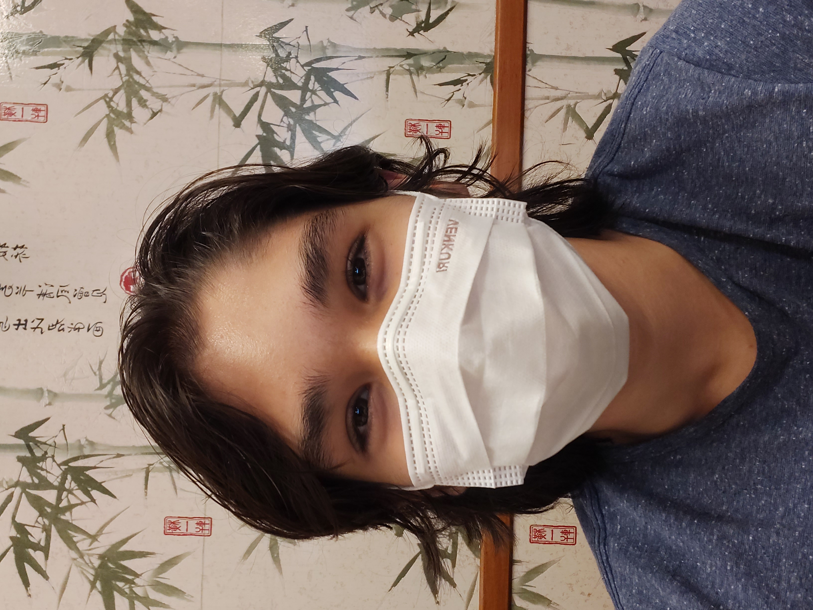

David Jr
|
 |
Meu nome é David, tenho 16 anos e sou apaixonado por manutenção de computadores. Atualmente, pretendo prestar o ENEM para Medicina, mas também não abro mão de SI como segunda opção. No meu tempo livre gosto de assistir bastante, principalmente animes e vídeos relacionados à tecnologia e hardware. Gosto de jogar jogos indies e RPGs pelo pc e também ouço bastante J-pop e raps de anime. Minha banda (Duo) favorita é YOASOBI, eu gosto bastante do estilo musical deles e da sonoridade das músicas. Sou um aluno um pouco quieto, só falo quando sou chamado, mas tento me esforçar ao máximo para sempre entregar meus deveres da melhor forma possível. |